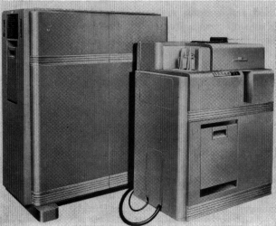

In September of 1954 I was back in Cambridge to commence my second and final year at the Sloan School. A small room at the Howard & Needles offices was now filled with cardboard trays holding perhaps as many as half a million punched cards from the toll gates of the New Jersey Turnpike.
It did not take much effort to convince two senior professors to become my thesis advisors though none of them had ever dealt with an effort based on enormous amounts of actual data. Even to this day, tenure is rarely granted for empirical research and what I was doing was out of range conventional thinking. Mathematical elegance, or in the absence of that, elaborate statistical dissection of survey results were at that time the preferred method for submitting papers for publication in professional journals.
The title of my thesis proposal was descriptive of its contents. It was Forecasting of Traffic and Scheduling of Toll Collection Personnel on the New Jersey Turnpike. In the thesis I would first forecast the demand for toll collection services and only then proceed with an estimate of what was required as the supply of toll collectors to service the demand dictated by vehicular volumes. When I started working on my project I did not have a clue how I would perform the work. Initially, I attempted to do the analysis of traffic volumes using a Marchant calculator. That idea quickly fizzled when I realized how difficult it would be to extract data from the huge collection of cards by reliance on visual means. A close friend urged me to get time on M.I.T.'s Whirlwind computer that was in much demand for performing scientific calculations. A closer examination of Whirlwind's capabilities convinced me that it would not work, even if I had been lucky to get access to it for a sufficient amount of computing time. Whirlwind was used to perform complex numerical analyses that involved crunching a limited set of data as inputs in order to output huge amounts of complex calculations that resulted in voluminous printouts of text and numbers. My problem was exactly opposite to that. I had enormous data inputs, which required only fairly simple calculations to come up with an answer. Furthermore, Whirlwind did not have a card-reading capacity to process even a fraction of my toll collector cards. The input to the Whirlwind was paper tape.
I do not remember who brought to my attention the existence of an IBM 604 on the campus. It was in the business office. The machine was mostly idle because it processed only a few applications that concerned alumni relations, alumni fund raising and general accounting. This set-up was optimized for the handling of business data, rather than for scientific calculations. This is why it escaped the attention of engineers and scientists who could not find any applications that would match the processing capacity of the IBM 604. When I approached Verzuh about using his machine for a research project he was delighted. After he understood the daring project I was engaged in he became generously helpful in assisting me in getting started.
The IBM 604 was introduced in 1948 and was designed primarily for calculating of results obtained from the processing of a large volume of punched cards. In its basic form the 604 was cabled to a 9,000 cards per hour combination cardpunch and card reader. To make it useful for printing results from simple calculations, the machine was combined with an IBM 417 electronic accounting machine, otherwise known as a tabulating machine. The 417 printed out my findings, which ultimately made up the bulk of my dissertation.
To hold temporary stored logic while the 604 was tallying traffic data, attached to the system was an IBM 941 auxiliary electro-magnetic relay memory. IBM packaged this collection as the CPC (Card-Programmed Electronic Calculator). The IBM 604 was produced until 1955, although some of the units were still running as late as the early 1970s. Over its product life IBM delivered 2,500 CPCs. In today's prices a CPC would cost well over a million dollars.
The IBM 604 Card-Programmed Electronic Calculator
The IBM 604 clock rate was 50 KHz, which is laughable by today's standards (the clock rate of the computer I am using to type this book is 3.0 GHz, which is 60,000 times faster). Both the IBM 417 and the IBM 941 were electromechanical machines, using magnetic relays as counters. When the machine was running one could listen to a most satisfying clackety-clack emanating from the grey enclosures that must have been deliberately designed not to be soundproof to increase operator satisfaction. The arithmetic unit for the 604 contained about 1,400 electronic vacuum tubes, offering a fast memory of 37 decimal digits, plus 13 counter/accumulators (the computer I am using has 2 GB of memory, which gives is a 750,000 times greater capacity). The logical operations were hard-wired, using a pluggable patch panel. Up to 60 sequential program steps could be wired on a single panel at any time, which limited the complexity of what I wished to calculate.
How this combination could produce what even twenty years later can be considered a sophisticated analysis is now beyond my comprehension. The best I can say is that after a 53-year career in computing I admit that the programming, operating and running of the IBM 604 at M.I.T. was the last time I fully understood exactly what tasks the computer was executing, at each logical step. In my mind I could visualize the calculating sequence in which each program step would be executed, which was confirmed by a satisfying ping.
The first problem I encountered in taking my New Jersey Turnpike cards into the IBM 604 computer for processing was the incompatibility of data sources. The Turnpike cards were in Remington-Rand format, with round holes in 90 columns, whereas the IBM system operated only with cards that had square holes in 80 columns. Although the Remington card was the same size as an IBM card, its layout was quite different. The Remington Rand card was composed of an upper half and a lower half whereas IBM did not split its card logically. Each card half had six rows, numbered 0, 1, 3, 5, 7, and 9. Zero and odd numbers were represented by a single punch in the appropriate position. Even numbers were represented by two punches: row 9 was always punched and the other punch went in the row of the number one less than the even number desired. Thus the value 4 would be represented by punches in the 3 and 9 rows. The letters of the alphabet and various other characters were represented by combinations of anywhere from two to five punches in a column. Years later, in the Department of Defense I became involved in a case of "friendly fire" (we obliterated our own personnel carriers) which was due to an incompatibility in data formats transmitted from the Marines to the Air Force. Though there was plenty of finger pointing, I grasped that a persistence of technical incompatibilities will be always a source of errors in the absence of tightly enforced standards.
I had to pay a service bureau for data conversion. To simplify the calculations the computer converted all traffic counts, whether for autos or trucks, entry or exit, into equivalent traffic. Similarly, the toll collector capacity was loaded into the computer in the form of equivalent handling speeds, regardless whether the incoming vehicles came on the right or the left side of a tollbooth. The traffic forecasts were generated on an hourly basis, using the well-established exponential smoothing method. The geometry of a particular toll plaza was taken into consideration by means of manual calculations, which were then loaded into the computer as numerical coefficients in a linear equation.
The engineers on the New Jersey Turnpike reviewing my work were concerned about the statistical validity of the traffic forecasts. Part of the problem was that I could not use all of the cards — the volume of cards that had to be processed could be as high as 2 million, which was too much even for the IBM 604. I used Monte Carlo random sampling methods for reducing the number of cards to about 200,000. To respond to the inquiries I had to estimate the sampling errors in case the cards I actually used would be materially different from the cards I should have analyzed. Therefore, I included a section on the effects of possible sampling errors. I addressed this matter by means of sensitivity analysis to find whether the computer would generate materially different toll collector schedules in case the traffic forecasts were off by a significant margin. They were not. The manning of the toll stations was largely dictated by management rules which were independent of traffic, except in cases of unusual peak traffic loading. Under such circumstances the waiting time at the toll booths would elongate, while toll collectors would have a tendency of speeding up the number of vehicles as the drivers would get their money ready.
Another innovative feature of the study was a calculation of the tradeoffs between the costs of added personnel and the driver waiting times. The criteria for adding toll collectors was the marginal cost of the drivers sitting in a queue as compared with toll collector wages. The value of the drivers' time was imputed from a Turnpike study to justify the difference customers were willing to pay for saving time on the New Jersey Turnpike and travel on the local congested highways. My thesis advisors criticized this analysis, because the delays on the toll-free highways varied depending on the time of the day, whereas the tolls on the Turnpike were always the same.
One of the fine points that were debated by my thesis advisors as well as by an HNTB engineers concerned the value of the drivers' time. How would one calculate the costs of the New Jersey Governor returning to his home, and sitting in the same queue at a toll plaza, as a station-wagon filled with laborers going to work? I certainly did not wish to get snarled into such debates. My position was that there was only one price for the people delayed in a car at a tollbooth. That price was set by the tolls paid for speedier travel on the toll road. Anybody who used the Turnpike could have traveled on the free U.S. Route 1 that was running parallel to the Turnpike.
The thesis is dated May 15, 1955. It consists of a theoretical part, in the form of a document, which is approximately eighty pages long, to conform to the format dictated by M.I.T. for dissertations submitted to fulfill requirements for a Master in Science degree. In addition to the summary, there were three volumes of about 200 pages each, which included the detailed computations, as they were delivered to the New Jersey Authority. The volume of the supporting documentation was unprecedented from the standpoint of the Sloan School, where computers had never been used either in class work or for research purposes. A typical output page would be titled Results of Scheduling Computations Obtained by Means of IBM 403 and IBM 604 Computers. The individual listings were arranged by year, by month, by day, by hour, by location. In each summary, the number of toll collectors required at a particular site would be tabulated.
My bulky thesis of over 600 pages was viewed by the other Sloan School students as a curiosity that could be only justified by my getting paid for it. It was not considered to be a good form to show data and calculations because that would require too much effort and could not be justified as merely a Master's dissertation. Despite professor Gregory's encouragement my thesis never received attention from the faculty or in student seminars. It was also my fault because I did not complete the printing and binding of the massive collection of foldout charts and schedules until a few hours before the submission deadline that would qualify me for receiving a Masters Degree in Industrial Management in June of 1955.
The "software" were complicated multiple plug boards. I have been told by the Charles Babbage Institute that my dissertation was the first academic work on a business application of computers.
Strassmann remained a CIO from 1958 through 2003, believed to be the longest tenure as a computer executive (General Foods, Kraft, Xerox, Department of Defense and NASA).